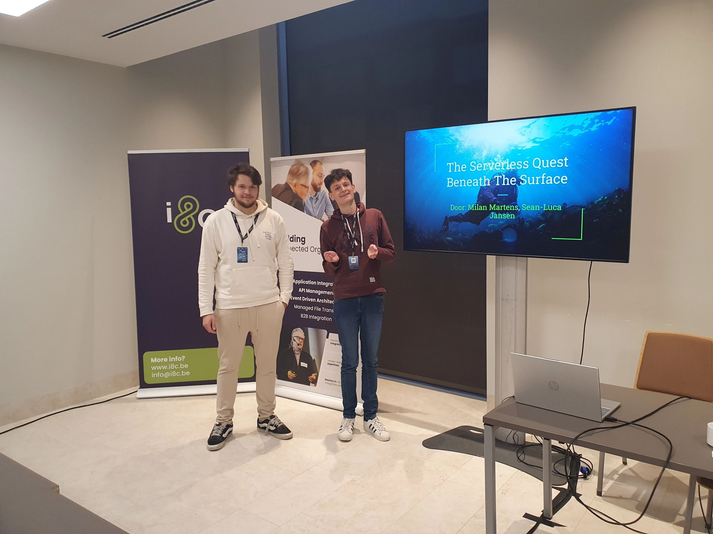
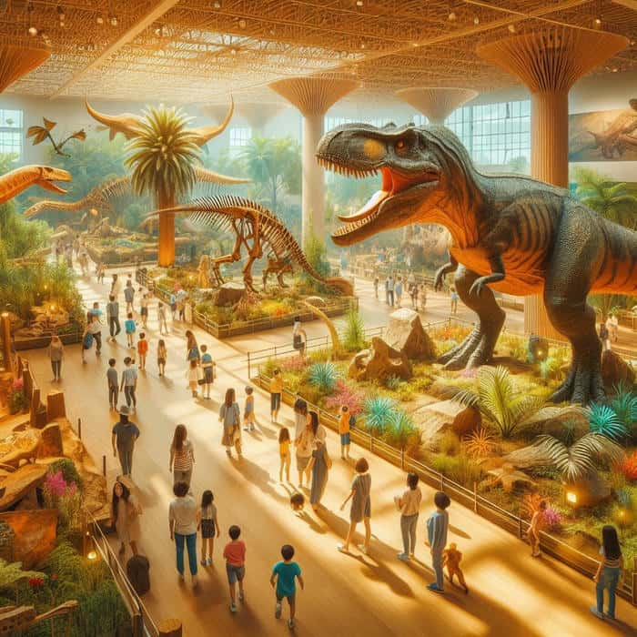

Student IT & Software — Thomas More
Ik werk graag in teamverband, maar geniet ook van uitdagingen die ik zelfstandig kan oplossen. Altijd op zoek naar nieuwe manieren om dingen beter en slimmer te bouwen.
Naast coderen ben ik competitief ingesteld, vandaar de bijnaam "Competitieve Kookaburra". Ik hou van sporten, vooral rugby, waar teamspirit, doorzettingsvermogen en snel schakelen centraal staan. Die mentaliteit, blijven gaan, ook onder druk, neem ik mee in alles wat ik doe.
Daarnaast hou ik van strategisch denken en mezelf continu uitdagen. Die drive neem ik mee in elk project dat ik aanpak. Of het nu gaat om een technische uitdaging of een creatief vraagstuk, ik ga er altijd vol voor.

Een webapplicatie in ontwikkeling, gebouwd met de TALL-stack als Skill 2-project. De app helpt gebruikers bij het plannen en organiseren van feesten en evenementen, van gastenlijsten tot taakverdeling.
Bekijk project →
Een volledig uitgewerkt analyse- en ontwerprapport voor voetbalclub KVV Rauw. Het project omvat een use case diagram met 21 use cases, Figma-prototypes per actor (ouder, trainer, beheerder) en een volledig UML-datamodel. Functionaliteiten zoals spelerbeheer, lidgeld- en kledijbetalingen, carpoolbeheer en trainingsplanning werden geprioriteerd via de MoSCoW-methode.
Bekijk Volledig analyse rapport
Deelgenomen aan de Hack The Future hackathon in Antwerpen. Gebouwd aan een serverless AWS-applicatie waarbij we events verwerkten en doorstuurden binnen een cloudomgeving.
Bekijk project →
Een volledig uitgewerkte webapplicatie voor een rugbyclub, gebouwd met de TALL-stack (Tailwind, Alpine.js, Laravel, Livewire). Die rugbyclubs helpt bij het organiseren van trainingen en wedstrijden, en het opvolgen van spelersprestaties via statistieken en grafieken. De applicatie is voornamelijk informatief en focust op overzicht, structuur en gebruiksgemak.
Bekijk project →
Een website gemaakt voor een echte coverband. Het project omvat een overzicht van bandinfo en contactmogelijkheden. Een eerste ervaring met een echte klant: van briefing tot live deployment op Netlify.
Bekijk project →Een data science project waarbij historische resultaten van de Giro d'Italia en Giro Donne werden gescraped, gekuist en geanalyseerd. Via visualisaties worden trends over de jaren blootgelegd, van winnende tijden tot dominante landen.
Bekijk project →
Een full-stack webapplicatie gebouwd als eindproject van het eerste jaar. De frontend is gedeployd via Netlify, de database draait op Vercel. Het project omvat gebruikersbeheer, dataopslag en een verzorgde UI van begin tot eind.
Bekijk project →